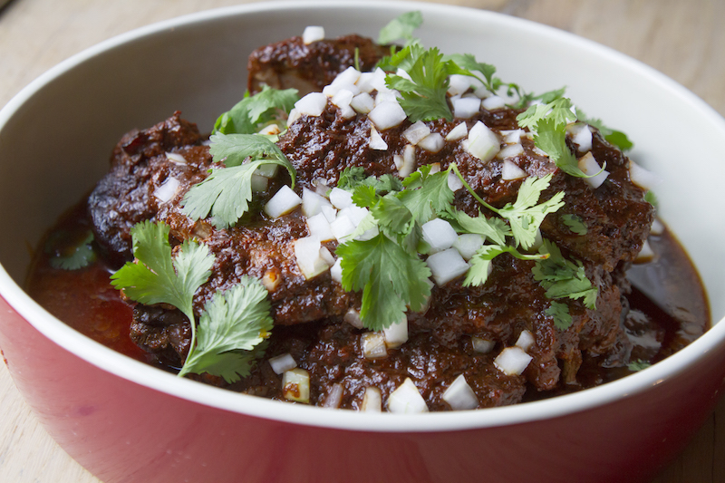

Savor the Tradition, Taste the Flavor!
Indulge in the rich, savory delight of our barbacoa, a culinary treasure steeped in tradition.
Slow-cooked to perfection, tender, flavorful meat is seasoned with a blend of authentic spices
that awaken your taste buds.
Whether enjoyed in tacos, burritos, or on its own, each bite promises an explosion of taste
that transports you to the heart of Mexican cuisine.
Ingredients
- 3 lbs beef chuck roast
- 1 onion, chopped
- 4 cloves garlic, minced
- 1-2 jalapeños (to taste)
- 2 tsp cumin
- 2 tsp oregano
- 1 cup beef broth
- Salt and pepper
Steps
- In a slow cooker, combine all ingredients.
- Cook on low for 8 hours until tender.
- Shred the meat and mix with cooking juices.
- Serve in tacos or with rice. Enjoy!